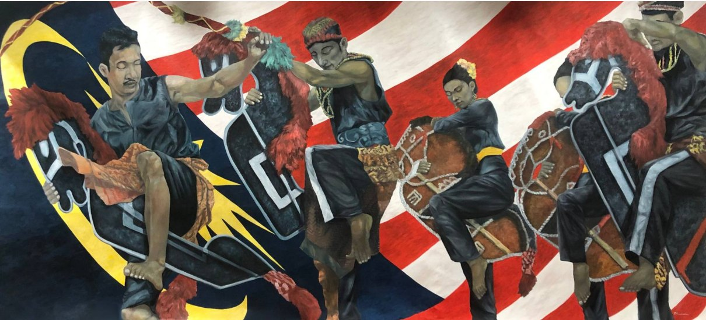
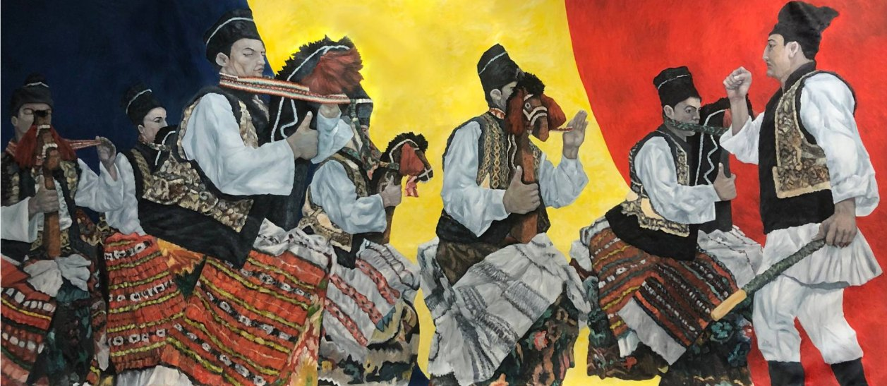

“The horse is the animal that carries the living to the dead, and the dancer to the other side of himself.” — curatorial gloss after Mircea Eliade, Shamanism: Archaic Techniques of Ecstasy. Presented bilingually; use the language selector above for the Romanian edition.„Calul este animalul care îi poartă pe cei vii spre cei morți, iar pe dansator — pe celălalt țărm al lui însuși.” — glosă curatorială după Mircea Eliade, Șamanismul și tehnicile arhaice ale extazului. Prezentat bilingv; folosiți selectorul de limbă de mai sus pentru ediția în română.

I. Two herds, one thresholdI. Două herghelii, un singur prag
In the ceremonial hall of the Parliament of Malaysia, beneath a coffered ceiling and between panels of carved timber, two canvases were raised side by side. Each is about four metres long. Each is painted over a national flag. In the first, the red-and-white stripes and golden crescent of the Jalur Gemilang sweep behind five dancers in black, their eyes closed, each clasping a flat horse cut from plaited bamboo and painted with white geometric lines. In the second, the blue, yellow and red of the Romanian tricolour stand behind a line of young men in white shirts and embroidered sheepskin vests, black caps pulled low. Small carved horse heads rise from their waists, and they too dance with lowered eyes.
În sala de ceremonii a Parlamentului Malaysiei, sub un plafon casetat și între panouri de lemn sculptat, două pânze au fost înălțate una lângă alta. Fiecare are aproape patru metri lungime. Fiecare este pictată peste un drapel național. În prima, dungile roșii și albe și semiluna aurie ale drapelului Jalur Gemilang se desfășoară în spatele a cinci dansatori în negru, cu ochii închiși, fiecare strângând un cal plat din bambus împletit, pictat cu linii geometrice albe. În a doua, albastrul, galbenul și roșul tricolorului românesc stau în spatele unui șir de flăcăi în cămăși albe și pieptare de piele brodate, cu căciulile negre trase pe frunte. Din dreptul brâului lor se înalță mici capete de cai sculptate, iar și ei dansează cu privirea plecată.
These are not portraits of two nations. They show one gesture made twice: a human body lending its legs to an absent horse, and through that horse passing into another state. The Malaysian dance is Kuda Kepang, the "plaited horse" of Johor's Javanese communities. The Romanian dance is Căiuții, the "little horses" of the winter rites of Bucovina and Moldavia. Frank Ts Tan painted both in 2024. They were shown in the Parliament of Malaysia as part of the celebrations for fifty-five years of diplomatic relations between Malaysia and Romania, established on 22 March 1969.1
Nu sunt portretele a două națiuni. Arată un singur gest, făcut de două ori: un trup omenesc își împrumută picioarele unui cal absent și, prin acel cal, trece într-o altă stare. Dansul malaysian este Kuda Kepang, „calul împletit” al comunităților javaneze din Johor. Dansul românesc este cel al Căiuților, „căluții” din obiceiurile de iarnă ale Bucovinei și Moldovei. Frank Ts Tan le-a pictat pe amândouă în 2024. Au fost expuse în Parlamentul Malaysiei, în cadrul aniversării a cincizeci și cinci de ani de relații diplomatice între Malaysia și România, stabilite la 22 martie 1969.1
This essay follows how the pairing came about: a diplomat recognised one dance in the other, a painter from Batu Pahat took up that recognition, and a state institution briefly became a ritual space. It also asks what the resemblance means and what it does not.
Eseul urmărește cum s-a născut această pereche: o diplomată a recunoscut un dans în celălalt, un pictor din Batu Pahat a preluat această recunoaștere, iar o instituție de stat a devenit, pentru scurt timp, spațiu ritual. Se întreabă, de asemenea, ce înseamnă asemănarea și ce nu înseamnă.
II. The plaited horse: Kuda Kepang in JohorII. Calul împletit: Kuda Kepang în Johor
Kuda Kepang reached the Malay Peninsula with Javanese migrants. It took root in the districts of Johor where they settled, among them Batu Pahat, Muar and Pontian. It is part of a large Javanese family of horse-trance performances, known in Java as jaran kepang, kuda lumping or jathilan. The dancers ride flat effigies of plaited bamboo or hide, painted and hung with manes of fibre or feathers. They move to an ensemble of gongs, drums and angklung. Origin stories differ. Some trace the dance to the cavalry of Javanese kingdoms, others to the Wali Songo, the saints said to have spread Islam through Java by adapting existing performance forms. The scholarly literature treats its origins as unresolved.2
Kuda Kepang a ajuns în Peninsula Malaeză odată cu migranții javanezi. S-a înrădăcinat în districtele din Johor unde aceștia s-au așezat, printre ele Batu Pahat, Muar și Pontian. Face parte dintr-o mare familie javaneză de spectacole de transă cu cai, cunoscute în Java ca jaran kepang, kuda lumping sau jathilan. Dansatorii încalecă efigii plate din bambus împletit sau din piele, pictate și împodobite cu coame de fibre sau pene. Se mișcă pe muzica unui ansamblu de gonguri, tobe și angklung. Poveștile despre origini diferă. Unele leagă dansul de cavaleria regatelor javaneze, altele de Wali Songo, sfinții despre care se spune că au răspândit islamul în Java adaptând formele de spectacol existente. Literatura de specialitate consideră originile nelămurite.2
What stays constant is trance. At some point in the performance, called naik or mabuk ("drunk"), the dancers stop performing a horse and start being one. They eat raw paddy or glass, crack whips and gallop without restraint. A ritual specialist watches over them and, at the end, brings each one back. Mohd Ghouse Nasuruddin and Solehah Ishak studied a Kuda Kepang troupe in Batu Pahat, the painter's home town. They describe the performance as healing. Music, chanting and movement shift awareness, and the healing is "communal psychic therapy rather than the healing of individual illness." In their account, the troupe performs the community's well-being back into being.3
Ceea ce rămâne constant este transa. La un moment dat în spectacol, numit naik sau mabuk („beat”), dansatorii încetează să joace un cal și încep să fie unul. Mănâncă orez nedecorticat sau sticlă, pocnesc din bice și galopează fără frâu. Un specialist ritual veghează asupra lor și, la final, îl readuce pe fiecare. Mohd Ghouse Nasuruddin și Solehah Ishak au studiat o trupă de Kuda Kepang din Batu Pahat, orașul natal al pictorului. Ei descriu spectacolul ca vindecare. Muzica, incantația și mișcarea schimbă starea de conștiință, iar vindecarea este „o terapie psihică a comunității, mai degrabă decât vindecarea unei boli individuale”. În relatarea lor, trupa readuce prin dans starea de bine a comunității.3
Mohd Kipli Abdul Rahman went further and read the related Kuda Kepang Mabuk through Mircea Eliade. He treats the trance as a symbolic initiation, a mystical journey through which the participant is cleansed and returns changed. His reading brings a Romanian phenomenologist of religion into a Malay-language ethnography of a Javanese dance in Johor. PacificaRomania exists to work at that kind of crossing.4
Mohd Kipli Abdul Rahman a mers mai departe și a citit varianta înrudită, Kuda Kepang Mabuk, prin Mircea Eliade. El tratează transa ca pe o inițiere simbolică, o călătorie mistică prin care participantul este purificat și se întoarce schimbat. Lectura lui aduce un fenomenolog român al religiilor într-o etnografie în limba malaeză despre un dans javanez din Johor. PacificaRomania există pentru a lucra la o astfel de intersecție.4
A 2023 fieldwork study of four active Johor troupes gives the most important detail for a collection of objects. Siti Islamiah Ahmad and her colleagues found that trance depends on two conditions: isim in the performer and isi, a charged content, in the performance equipment. Without both, the trance does not come, even when every step of the ritual has been carried out.5 So the plaited horse is not a prop. It is a vessel, and it has to be filled.
Un studiu de teren din 2023 asupra a patru trupe active din Johor oferă detaliul cel mai important pentru o colecție de obiecte. Siti Islamiah Ahmad și colegii săi au constatat că transa depinde de două condiții: isim în interpret și isi, un conținut încărcat, în echipamentul spectacolului. Fără amândouă, transa nu vine, chiar dacă fiecare etapă a ritualului a fost îndeplinită.5 Așadar, calul împletit nu este o recuzită. Este un recipient și trebuie umplut.

III. The little horses of the turning year: CăiuțiiIII. Căluții anului care se întoarce: Căiuții
In northern Moldavia and Bucovina, in the villages of Suceava and Botoșani counties, the old year does not simply end. It is ridden out. Between Christmas and New Year, bands of young men (flăcăi), usually four, eight or twelve, go from house to house as căiuți. Each wears a small horse built on a light frame and fastened at the waist, so that the dancer seems to be both horse and rider. They wear skirts sewn with stripes and beads and tall decorated caps. Masked figures go with them: the old men, the old women, the beggars, the bear, the goat. The dance is a controlled gallop of stamping, turning and sudden stops, set to named melodies. Between dances, the troupe calls blessings on the household for the coming year.6
În nordul Moldovei și în Bucovina, în satele din județele Suceava și Botoșani, anul vechi nu se încheie pur și simplu. Este scos din lume în galop. Între Crăciun și Anul Nou, cete de flăcăi, de obicei patru, opt sau doisprezece, merg din casă în casă ca căiuți. Fiecare poartă un mic cal construit pe un schelet ușor și prins la brâu, astfel încât dansatorul pare a fi deopotrivă cal și călăreț. Poartă fuste cusute cu dungi și mărgele și căciuli înalte, împodobite. Îi însoțesc personaje mascate: moșii, babele, cerșetorii, ursul, capra. Dansul este un galop controlat, cu bătăi din picior, rotiri și opriri bruște, pe melodii care își au fiecare numele lor. Între jocuri, ceata urează casei belșug pentru anul care vine.6
Căiuții belong to the Romanian winter processions that PacificaRomania calls the mask as threshold, alongside the capra, the ursul and the cerbul. They take place at the most dangerous point in the calendar, when the year is thinnest. The horse there is a vehicle of transit: it carries the community from one year into the next, and the house from risk into blessing.
Căiuții fac parte din alaiurile românești de iarnă pe care PacificaRomania le numește masca drept prag, alături de capră, urs și cerb. Au loc în punctul cel mai primejdios al calendarului, când anul este cel mai subțire. Calul este aici vehicul de trecere: poartă comunitatea dintr-un an în altul, iar casa, din primejdie în binecuvântare.
Căiuții need to be kept separate from their better-known relatives, the Călușari of southern Romania. The Călușari dance at Rusalii (Pentecost), not at the winter solstice. They are bound by an oath and organised under a leader (vătaf), and they carry a flag, garlic and wormwood. Their healing is directed against the iele, the fairies whose touch brings a sickness called luat din Rusalii, "taken by the Rusalii". Gail Kligman's classic study showed how completely Căluș works as a system of affliction and cure. Eliade himself wrote about the Călușari and their "Queen of the Fairies" in his essay on European witchcraft. Căluș was proclaimed by UNESCO in 2005 and inscribed on the Representative List of the Intangible Cultural Heritage of Humanity in 2008.7
Căiuții trebuie deosebiți de rudele lor mai cunoscute, Călușarii din sudul României. Călușarii joacă de Rusalii, nu la solstițiul de iarnă. Sunt legați printr-un jurământ și conduși de un vătaf, iar cu ei poartă steagul, usturoiul și pelinul. Vindecarea lor se îndreaptă împotriva ielelor, zânele a căror atingere aduce boala numită „luat din Rusalii”. Studiul clasic al lui Gail Kligman a arătat cât de deplin funcționează Călușul ca sistem de boală și leac. Eliade însuși a scris despre Călușari și despre „Doamna Zânelor” în eseul său despre vrăjitoria europeană. Călușul a fost proclamat de UNESCO în 2005 și înscris în 2008 pe Lista reprezentativă a patrimoniului cultural imaterial al umanității.7
So Romania has not one horse-dance but a family of them: a spring and summer branch focused on healing (Căluș) and a winter branch focused on renewal (Căiuții). Kuda Kepang has something in common with each. With the Călușari it shares trance, affliction and cure. With the Căiuții it shares the most visible thing: the dancer made into a horseman by a horse he carries himself.
România nu are, așadar, un singur dans al calului, ci o familie: o ramură de primăvară și vară, centrată pe vindecare (Călușul), și o ramură de iarnă, centrată pe înnoire (Căiuții). Kuda Kepang are ceva în comun cu fiecare. Cu Călușarii împarte transa, boala și leacul. Cu Căiuții împarte lucrul cel mai vizibil: dansatorul devenit călăreț printr-un cal pe care îl poartă el însuși.
IV. The ambassador's recognitionIV. Recunoașterea ambasadoarei
Comparative religion often starts with an act of recognition that looks like intuition and is really the product of a trained eye. Nineta Bărbulescu was Romania's ambassador in Canberra, the first Romanian ambassador to Fiji, Kiribati, Nauru and Tuvalu, and later ambassador in Kuala Lumpur. She is the co-creator of PacificaRomania. In Malaysia she watched Kuda Kepang and saw the Căiuții of her own country in it: a line of dancers, each carrying their own horse, driven by rhythm to the edge of ordinary behaviour.
Religia comparată începe adesea cu un act de recunoaștere care pare intuiție și este, de fapt, rodul unui ochi format. Nineta Bărbulescu a fost ambasadoarea României la Canberra, primul ambasador român în Fiji, Kiribati, Nauru și Tuvalu, apoi ambasadoare la Kuala Lumpur. Este co-creatoarea PacificaRomania. În Malaysia a privit Kuda Kepang și a văzut în el căiuții din propria țară: un șir de dansatori, fiecare purtându-și propriul cal, împinși de ritm până la marginea comportamentului obișnuit.
This was not her first such recognition. In Canberra, standing before a Tiwi pukumani pole in the collection, she had written of "an unexpected and thoughtful resemblance" with Brâncuși's Endless Column, noting that Brâncuși too had drawn on the funerary pillars of Romanian village cemeteries.8 Both recognitions work the same way. Neither claims that one tradition descends from the other. Each notices that two peoples, far apart, gave the same shape to the same need.
Nu era prima astfel de recunoaștere. La Canberra, în fața unui stâlp funerar pukumani din Insulele Tiwi aflat în colecție, scrisese despre „o asemănare neașteptată și plină de sens” cu Coloana fără sfârșit a lui Brâncuși, amintind că și Brâncuși se inspirase din stâlpii funerari ai cimitirelor sătești românești.8 Ambele recunoașteri funcționează la fel. Niciuna nu susține că o tradiție o trage pe cealaltă. Fiecare observă că două popoare, departe unul de altul, au dat aceeași formă aceleiași nevoi.
The recognition moved from conversation into paint. The artist's own note on the Malaysian canvas records that it began with a discussion about traditional dances between a Malaysian business leader and the Romanian ambassador. While researching Kuda Kepang, Frank Ts Tan learned of the comparable horse dance of the Bucovinian commune of Botoșana.9 One diplomat's recognition became a painter's research, and the research became two canvases that together are longer than eight metres.
Recunoașterea a trecut din conversație în pictură. Nota artistului la pânza malaysiană arată că totul a pornit de la o discuție despre dansurile tradiționale între un om de afaceri malaysian și ambasadoarea României. Documentându-se despre Kuda Kepang, Frank Ts Tan a aflat de dansul cu cai asemănător din comuna bucovineană Botoșana.9 Recunoașterea unei diplomate a devenit cercetarea unui pictor, iar cercetarea a devenit două pânze care, împreună, depășesc opt metri.
V. Painting the trance from insideV. Transa pictată dinăuntru
Frank Ts Tan was born in 1970 in Batu Pahat and trained in oil painting and watercolour at National Taiwan Normal University. He describes his method as "extracting and reinforcing from nature" and then reintegrating the image, the way light in a forest makes shapes that are "combined with abstract and real."10 The two canvases apply that method to ritual. The dancers are painted realistically, but the ground behind them is abstracted into the flat colour fields of a flag.
Frank Ts Tan s-a născut în 1970 la Batu Pahat și a studiat pictura în ulei și acuarela la Universitatea Normală Națională din Taiwan. Își descrie metoda ca „extragere și întărire din natură”, urmată de reintegrarea imaginii, așa cum lumina dintr-o pădure creează forme „combinate, abstracte și reale”.10 Cele două pânze aplică această metodă ritualului. Dansatorii sunt pictați realist, dar fundalul din spatele lor este abstractizat în câmpurile de culoare plată ale unui drapel.
What stands out is the closed eye. In the Malaysian canvas almost every face is turned inward, eyelids down, mouth relaxed. This is the mabuk state, the moment when, in the language of the Johor troupes, the isim of the dancer has met the isi of the horse. The leftmost dancer rides the yellow crescent of the flag as if it were the horse, and the effigies are painted in the same white-edged black as the dancers' clothes, so it is hard to tell where the rider ends and the horse begins. In the Romanian canvas the eyes are lowered rather than closed. This is a rite of discipline more than possession, a controlled gallop, with a figure holding a staff at the right who seems to set the pace. Tan does not make the two dances identical. He paints them as two degrees of one crossing.
Ceea ce iese în evidență este ochiul închis. În pânza malaysiană aproape fiecare chip este întors spre interior, cu pleoapele coborâte și gura relaxată. Este starea mabuk, momentul în care, în limbajul trupelor din Johor, isim-ul dansatorului s-a întâlnit cu isi-ul calului. Dansatorul din stânga încalecă semiluna galbenă a drapelului ca și cum ea ar fi calul, iar efigiile sunt pictate în același negru cu margini albe ca hainele dansatorilor, astfel încât e greu de spus unde se termină călărețul și unde începe calul. În pânza românească ochii sunt plecați, nu închiși. Este un rit mai degrabă al disciplinei decât al posesiei, un galop controlat, cu o figură cu toiag în dreapta care pare să dea ritmul. Tan nu face cele două dansuri identice. Le pictează ca pe două trepte ale aceleiași treceri.
The flags change the paintings. Pressed flat behind the dancers, they stop being emblems and become the ground of the ritual, the space into which the rite is danced. Eliade wrote that sacred space is made by an interruption, a break in the homogeneity of the profane.11 Here the break goes the other way: the ritual interrupts the flag. The state's most abstract sign is filled for a moment with bodies, rhythm and the old animal of transit.
Drapelele schimbă picturile. Aplatizate în spatele dansatorilor, ele încetează să fie embleme și devin terenul ritualului, spațiul în care ritul este dansat. Eliade scria că spațiul sacru se naște printr-o întrerupere, o ruptură în omogenitatea profanului.11 Aici ruptura merge invers: ritualul întrerupe drapelul. Semnul cel mai abstract al statului se umple pentru o clipă de trupuri, de ritm și de vechiul animal al trecerii.
VI. Parliament as ritual arenaVI. Parlamentul ca arenă rituală
Diplomatic anniversaries are rituals too. They have a calendar, like Căiuții; officiants and a sequence of speeches and gifts; and a stated purpose of renewal, the relationship "ridden into" a new cycle. The 55th-anniversary exhibition in the Parliament of Malaysia was hosted in the presence of the President of the Senate (Dewan Negara), and the event was recorded on Parliament's official channel.12 Members of the Romanian community in Malaysia attended in the ie and embroidered vests of Romanian dress, the same costume Tan painted on his Căiuții. For one evening the costume, the painted costume and the wearers stood in the same room.
Aniversările diplomatice sunt și ele ritualuri. Au un calendar, ca și Căiuții; au oficianți și o succesiune de discursuri și daruri; și au scopul declarat al înnoirii, relația „purtată în galop” într-un nou ciclu. Expoziția aniversară de 55 de ani din Parlamentul Malaysiei a avut loc în prezența Președintelui Senatului (Dewan Negara), iar evenimentul a fost înregistrat pe canalul oficial al Parlamentului.12 Membri ai comunității românești din Malaysia au venit îmbrăcați în ii și pieptare brodate, același port pe care Tan l-a pictat pe căiuții săi. Pentru o seară, portul, portul pictat și purtătorii lui au stat în aceeași încăpere.
In an Eliadean reading, the hall becomes a templum: a space marked out in which two peoples can appear to each other in their most characteristic forms. What they showed each other was not an industry or a monument. It was a horse made by hand and a body willing to go outside itself. Cultural diplomacy seldom gets further than that.
Într-o lectură eliadiană, sala devine un templum: un spațiu delimitat în care două popoare pot apărea unul în fața celuilalt în formele lor cele mai caracteristice. Ce și-au arătat nu a fost o industrie sau un monument. A fost un cal făcut de mână și un trup dispus să iasă din sine. Diplomația culturală ajunge rareori mai departe de atât.
Watch — the 55th-anniversary exhibition at the Parliament of MalaysiaVizionați — expoziția aniversară de 55 de ani în Parlamentul Malaysiei
VII. The collection's herd: tourist horses and the empty vesselVII. Herghelia colecției: caii turistici și recipientul gol
PacificaRomania holds its own small herd. The largest horse is made of plaited bamboo, the diagonal twill of Malay anyaman, bound at the edges with split cane. Its body is painted with rows of pink, green and yellow lozenges, each centred on a red eye-shape outlined in white. Its mane and tail are knotted wool in rust, orange and black, and a fringe of white braid runs along the crest. Laid over it are three smaller horses of jute and palm fibre, gilded, sequinned and bridled in blue beadwork, with manes of blond, gold and straw. Arranged together they look like a mare with foals, a family moving the same way.
PacificaRomania are propria sa mică herghelie. Calul cel mare este din bambus împletit, în diagonala sergei malaeze anyaman, legat pe margini cu trestie despicată. Trupul îi este pictat cu șiruri de romburi roz, verzi și galbene, fiecare având în centru o formă de ochi roșu conturată cu alb. Coama și coada sunt din lână înnodată, ruginie, portocalie și neagră, iar pe creastă trece o franjură de ceaprazuri albe. Peste el sunt așezați trei căluți mai mici din iută și fibră de palmier, aurii, cu paiete și hamuri din mărgele albastre, cu coame blonde, aurii și de culoarea paiului. Așezați împreună, arată ca o iapă cu mânjii ei, o familie care se mișcă în aceeași direcție.
These are tourist-art objects, made to be sold rather than danced. The collection treats them as the living afterlife of a ritual form, not as degraded copies. Nelson Graburn and later Ruth Phillips and Christopher Steiner showed that "tourist" and "ethnic" arts are how communities present themselves to outsiders, a deliberate translation and not a corruption.13 The Johor research lets us be more exact. A horse made for sale has not received isi. It has not been charged, prayed over or kept by a troupe. It has the form of the vehicle without its load.
Sunt obiecte de artă turistică, făcute pentru vânzare, nu pentru dans. Colecția le tratează ca pe viața de după viață a unei forme rituale, nu ca pe copii degradate. Nelson Graburn și, mai târziu, Ruth Phillips și Christopher Steiner au arătat că artele „turistice” și „etnice” sunt felul în care comunitățile se prezintă străinilor, o traducere deliberată, nu o alterare.13 Cercetările din Johor ne permit să fim mai exacți. Un cal făcut pentru vânzare nu a primit isi. Nu a fost încărcat, nu s-au rostit rugăciuni asupra lui și nu a fost păstrat de o trupă. Are forma vehiculului fără încărcătura lui.
That emptiness is what gives the object its value here. A container of memory is not always full. The Batak naga morsarang in this collection, the medicine horn with its stopper, is powerful because it can be filled and emptied. The tourist horse is a vessel that has been deliberately left unfilled. It records the rite without performing it, and in a museum that is the right condition for it. It shows the crossing without asking anyone to make it.
Tocmai acest gol îi dă obiectului valoare aici. Un recipient al memoriei nu este întotdeauna plin. Naga morsarang batak din această colecție, cornul de leacuri cu dopul său, este puternic pentru că poate fi umplut și golit. Calul turistic este un recipient lăsat în mod deliberat neumplut. Consemnează ritul fără să-l săvârșească, iar într-un muzeu aceasta este condiția potrivită pentru el. Arată trecerea fără a cere nimănui să o facă.
VIII. Convergence, not descentVIII. Convergență, nu descendență
The resemblance is real, and it is easy to overstate. No documented source connects the Romanian horse-dances to Java or the Malay world. It would be the old diffusionist error to jump from "the horse mattered to Indo-European peoples" to "this dance in Johor came from the Carpathians." The research behind this essay proposes a more careful model in three layers.14
Asemănarea este reală și este ușor de exagerat. Nicio sursă documentată nu leagă dansurile românești ale calului de Java sau de lumea malaeză. Ar fi vechea eroare difuzionistă să sari de la „calul a contat pentru popoarele indo-europene” la „acest dans din Johor a venit din Carpați”. Cercetarea din spatele acestui eseu propune un model mai atent, în trei straturi.14
The first layer is a ritual grammar found in many cultures: a temporary sacred collective, preparation, an altered state, contact with an invisible order, extraordinary bodily behaviour, healing or blessing, and return. The second is local systems of possession and cure. Johor already has main puteri, and Romania has the iele and their remedies. The third is a symbolic vocabulary, where the horse sits, which may have its own history of transmission and has to be tested separately through words, iconography, dates and the earliest forms of the effigy.
Primul strat este o gramatică rituală prezentă în multe culturi: o colectivitate sacră temporară, pregătirea, o stare alterată, contactul cu o ordine nevăzută, un comportament corporal ieșit din comun, vindecarea sau binecuvântarea și întoarcerea. Al doilea sunt sistemele locale de posesie și leac. Johorul are deja main puteri, iar România are ielele și remediile lor. Al treilea este un vocabular simbolic, unde se află calul, care poate avea propria istorie de transmitere și trebuie verificat separat, prin cuvinte, iconografie, datări și cele mai vechi forme ale efigiei.
The negative evidence matters as much as the matches. European hobby-horses often appear without trance. Southeast Asian trance often appears without horses. The formal oath of the Călușari has no established parallel in Kuda Kepang. These gaps keep the comparison honest. They show that the horse is not the explanation. It is the entry point to the question.
Dovezile negative contează la fel de mult ca potrivirile. Căluții de lemn europeni apar adesea fără transă. Transa din Asia de Sud-Est apare adesea fără cai. Jurământul formal al Călușarilor nu are o paralelă stabilită în Kuda Kepang. Aceste goluri păstrează comparația onestă. Ele arată că nu calul este explicația. Calul este punctul de intrare în întrebare.
IX. Coda: the crossingIX. Coda: trecerea
Eliade saw the horse in Siberian and Central Asian shamanism as a mount for ecstatic flight, sometimes a drum and sometimes a hobby-horse, the animal that lets the soul leave and come back.15 Whatever the history of that image, both of Tan's canvases show it: the dancer carries the horse so that the horse can carry the dancer.
Eliade vedea calul, în șamanismul siberian și central-asiatic, ca montură a zborului extatic, uneori tobă și alteori căluț de lemn, animalul care lasă sufletul să plece și să se întoarcă.15 Oricare ar fi istoria acestei imagini, ambele pânze ale lui Tan o arată: dansatorul poartă calul pentru ca și calul să-l poarte pe dansator.
PacificaRomania has followed this crossing through other forms: the frigatebird and the pasărea-suflet, the tunggal panaluan and the Endless Column, the Mah Meri mask and the Romanian goat. The horse adds speed and a rider, and it adds one lesson in particular: you cannot cross alone. The Kuda Kepang troupe needs its specialist to bring the dancer back. The Căiuții need the household that opens its door. Two countries need a room in which to meet, fifty-five years after they first agreed to.
PacificaRomania a urmărit această trecere și prin alte forme: fregata și pasărea-suflet, tunggal panaluan și Coloana fără sfârșit, masca Mah Meri și capra românească. Calul adaugă viteza și un călăreț și adaugă, mai ales, o lecție: nu poți trece singur. Trupa de Kuda Kepang are nevoie de specialistul ei ca să-l readucă pe dansator. Căiuții au nevoie de casa care își deschide ușa. Două țări au nevoie de o încăpere în care să se întâlnească, la cincizeci și cinci de ani după ce au convenit prima oară să o facă.
That is what the diplomat saw in the dance, what the painter from Batu Pahat put on the flags, and what the small herd in this collection keeps unfilled. The horse is not the answer. It is how the crossing is made.
Aceasta este ceea ce diplomata a văzut în dans, ceea ce pictorul din Batu Pahat a așezat pe drapele și ceea ce mica herghelie din această colecție păstrează neumplut. Calul nu este răspunsul. Este felul în care se face trecerea.
Notes & referencesNote și bibliografie
- Diplomatic relations between Malaysia and Romania were established on 22 March 1969. The 55th anniversary (2024–25) was also marked by an art exhibition at Universiti Pendidikan Sultan Idris, Tanjung Malim (6 September 2024), and the Romania Garden in Penampang, Sabah. Parliament of Malaysia, Majlis Pameran Seni Sempena Ulang Tahun Ke-55 Hubungan Diplomatik Malaysia–Romania, parlimen.gov.my.Relațiile diplomatice dintre Malaysia și România au fost stabilite la 22 martie 1969. Aniversarea de 55 de ani (2024–25) a mai fost marcată printr-o expoziție de artă la Universiti Pendidikan Sultan Idris, Tanjung Malim (6 septembrie 2024), și prin Grădina României din Penampang, Sabah. Parlamentul Malaysiei, Majlis Pameran Seni Sempena Ulang Tahun Ke-55 Hubungan Diplomatik Malaysia–Romania, parlimen.gov.my.
- On origins and regional variants, see the sources in nn. 3–5. Javanese jathilan and kuda lumping are closely related trance forms.Despre origini și variante regionale, vezi sursele din notele 3–5. Jathilan și kuda lumping din Java sunt forme de transă strâns înrudite.
- Mohd Ghouse Nasuruddin and Solehah Ishak, "Healing through Trance: Case Study of a Kuda Kepang Performance in Batu Pahat, Johor," Procedia – Social and Behavioral Sciences 185 (2015): 151–155.Nasuruddin și Ishak (2015), Procedia – Social and Behavioral Sciences 185: 151–155.
- Mohd Kipli Abdul Rahman, "Tari Ritual Kuda Kepang Mabuk: Inisiasi Simbolik Perjalanan Mistik," Melayu: Jurnal Antarabangsa Dunia Melayu 6, no. 2 (2013): 190–209.Abdul Rahman (2013), Melayu: Jurnal Antarabangsa Dunia Melayu 6(2): 190–209.
- Siti Islamiah Ahmad, Mohd Effindi Samsuddin and Awang Azman Awang Pawi, "'Isim' dan 'Isi' dalam Persembahan Seni Permainan Kuda Kepang," Jurnal Pengajian Melayu (JOMAS) 34, no. 1 (2023): 107–125.Ahmad, Samsuddin și Awang Pawi (2023), Jurnal Pengajian Melayu (JOMAS) 34(1): 107–125.
- Institutul Național al Patrimoniului, "Căiuții," patrimoniu.ro (Intangible Heritage register); CNIPT Botoșani, "Jocul căiuților – dans ritual executat de flăcăi costumați în căiuți," visitbotosani.ro (2014).Institutul Național al Patrimoniului, „Căiuții”, patrimoniu.ro; CNIPT Botoșani, „Jocul căiuților”, visitbotosani.ro (2014).
- Gail Kligman, Căluș: Symbolic Transformation in Romanian Ritual (Chicago: University of Chicago Press, 1981); Mircea Eliade, "Some Observations on European Witchcraft," in Occultism, Witchcraft, and Cultural Fashions (Chicago: University of Chicago Press, 1976); UNESCO, "Căluș Ritual" (proclaimed 2005; inscribed 2008).Gail Kligman, Căluș: Symbolic Transformation in Romanian Ritual (1981); Mircea Eliade, „Some Observations on European Witchcraft” (1976); UNESCO, „Ritualul Călușului” (proclamat 2005; înscris 2008).
- Nineta Bărbulescu, reflection on the Tiwi pukumani pole, PacificaRomania Catalogue.Nineta Bărbulescu, reflecție asupra stâlpului pukumani tiwi, Catalogul PacificaRomania.
- Frank Ts Tan, Malaysia Kuda Kepang (2024), oil on canvas, 157.5 × 70.9 in; artist's description, Saatchi Art, artwork no. 1246601.Frank Ts Tan, Malaysia Kuda Kepang (2024), ulei pe pânză; descrierea artistului, Saatchi Art, nr. 1246601.
- Frank Ts Tan, artist profile and statement, Saatchi Art (saatchiart.com/franktstan).Frank Ts Tan, profil și declarație de artist, Saatchi Art.
- Mircea Eliade, The Sacred and the Profane: The Nature of Religion (New York: Harcourt, 1959), ch. 1.Mircea Eliade, Sacrul și profanul, cap. 1.
- Parliament of Malaysia official channel, recording of the 55th-anniversary art exhibition: youtube.com/watch?v=TAsLtV_cqhU.Canalul oficial al Parlamentului Malaysiei: youtube.com/watch?v=TAsLtV_cqhU.
- Nelson H. H. Graburn, ed., Ethnic and Tourist Arts: Cultural Expressions from the Fourth World (Berkeley: University of California Press, 1976); Ruth B. Phillips and Christopher B. Steiner, eds., Unpacking Culture: Art and Commodity in Colonial and Postcolonial Worlds (Berkeley: University of California Press, 1999).Graburn (1976); Phillips și Steiner (1999).
- PacificaRomania research dossier, "The Horse, the Trance and the Sacred Crossing: Călușari, Kuda Kepang and the Ritual Grammar of Ecstasy" (unpublished working paper, 2026).Dosar de cercetare PacificaRomania, „The Horse, the Trance and the Sacred Crossing” (document de lucru nepublicat, 2026).
- Mircea Eliade, Shamanism: Archaic Techniques of Ecstasy, trans. Willard R. Trask (Princeton: Princeton University Press, Bollingen Series LXXVI, 1964; French ed. 1951), esp. ch. 5, "Symbolism of the Shaman's Costume and Drum."Mircea Eliade, Șamanismul și tehnicile arhaice ale extazului (ed. fr. 1951; ed. engl. 1964), în special cap. 5, „Simbolismul costumului și al tobei șamanice”.